2026-08-06
VOL 310
读者，早。
算力和信任也在同一张桌上。Anthropic 被曝签下 100 亿美元 Volta 算力合同，Lovable 找 Cerebras 缩短生成等待，又给每个商业应用上信任页。Meta 进 coding agent 战场，Jina 做更小的 reranker，Zendesk 把对象建模交给 Admin Copilot。今天的提醒很直接：AI 落地看谁能把权限、成本、速度和可核验证据压进一套日常操作。
Google 在 8 月 5 日发表 Android 安全博客，回应欧盟依据 DMA 推进的 AI 服务互操作措施。Google 称，欧盟希望 Android 向用户下载的 AI Agent 开放深层系统级能力，但这会改写 Android 的沙箱和权限模型；公司主张实施阶段必须让安全专家参与，先定义基线防护，再谈互操作。

Sundar Pichai 在 8 月 5 日宣布 Google AI 组织调整：Demis Hassabis 转任 Google DeepMind Chair 和 Alphabet Chief Scientist，继续领导 Isomorphic Labs；Koray Kavukcuoglu 将作为 Google DeepMind SVP 接手 Gemini 模型、前沿研究、Gemini app 和开发者团队。Pichai 同时披露 Gemma 模型下载量超过 9 亿，Gemini app 月活超过 9.5 亿。
Reuters 8 月 5 日报道称，Meta 发布首个 AI coding agent Muse Code beta，由最新 Muse Spark 1.2 模型驱动，面向 macOS 和 Linux 终端。Meta 称它可写代码、验证结果、处理长复杂项目，并可同时运行多个 sub-agent；标准价格为每百万 input tokens 1.25 美元、output tokens 4.25 美元。

Reuters 8 月 5 日援引知情人士报道，Anthropic 已与 Nvidia 支持的云基础设施创业公司 Volta Infra 签署 100 亿美元算力容量合同。Volta 此前称自己获得了一份未具名 AI 实验室的 100 亿美元订单，由 Bitdeer 在挪威数据中心交付，为期六年；Anthropic 和 Bitdeer 未予置评。
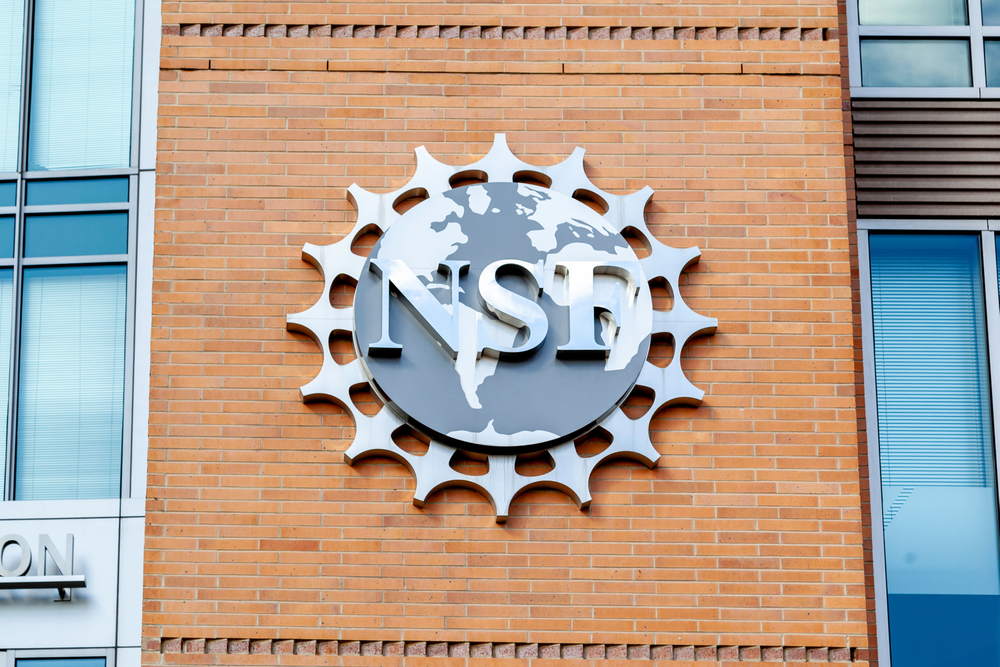
美国国家科学基金会宣布 State and Regional AI Infrastructure Hubs 计划，拟投入 1 亿美元，支持最多 10 个州级或区域 AI 基础设施枢纽。项目重点是让研究者、学生和教育者获得 AI 科研所需的算力、数据和软件资源，并引入地方政府、大学、产业和慈善资金共同建设。
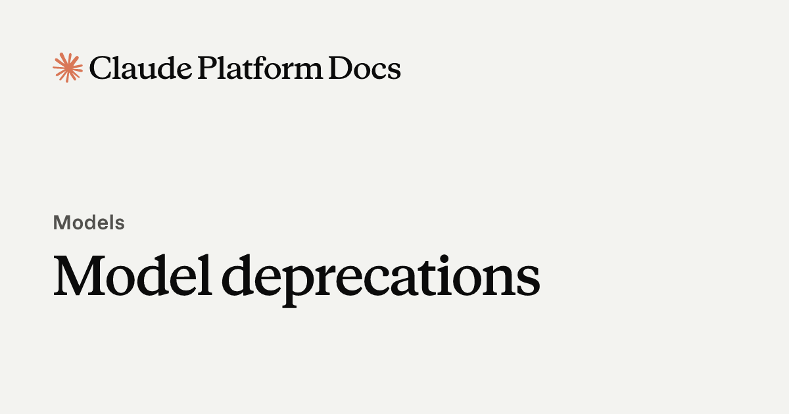
Anthropic 文档显示，`claude-opus-4-1-20250805` 已在 8 月 5 日从 Claude API 退休。该模型 6 月 5 日被标记 deprecated，推荐迁移目标为 `claude-opus-4-8`；文档还提示 Claude Opus 4.7 及后续模型对非默认 `temperature`、`top_p`、`top_k` 会返回 400。
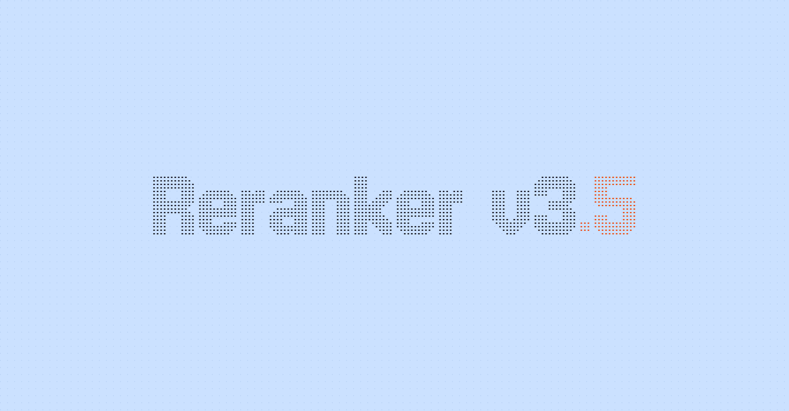
Jina AI 在 Hugging Face 发布 `jina-reranker-v3.5`，这是一个 0.6B 参数 listwise reranker。作者称它在 BEIR 上达到 63.20 nDCG@10，超过 4B 的 Qwen3-Reranker-4B；在长文档场景比 v3 最高快 1.56 倍，并在半结构化检索 Struct-IR 上比 v3 提升 9.6 分。
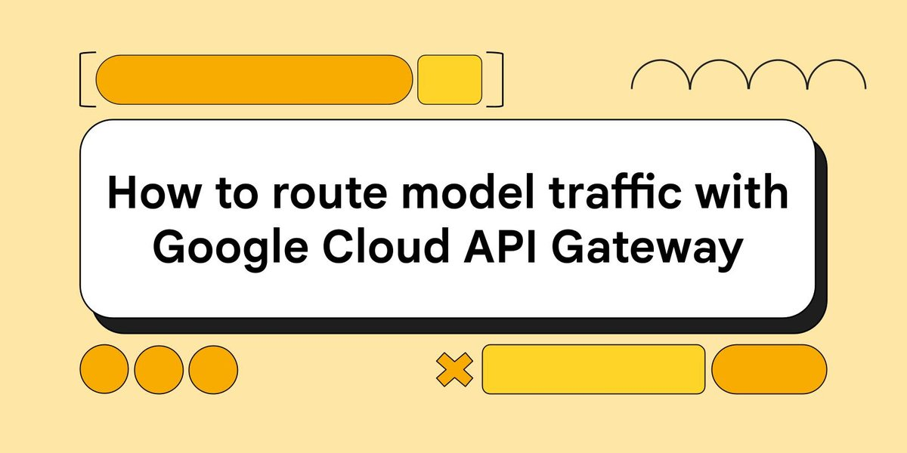
Google Developers Blog 介绍 API Gateway 的 AI model routing public preview。开发者可在 OpenAPI 3.x 规格里用 `x-google-api-management` 将虚拟模型名映射到后端模型，把限流、token 跟踪、动态路由和 Agent Gateway 的安全出口治理放在同一条路径上。
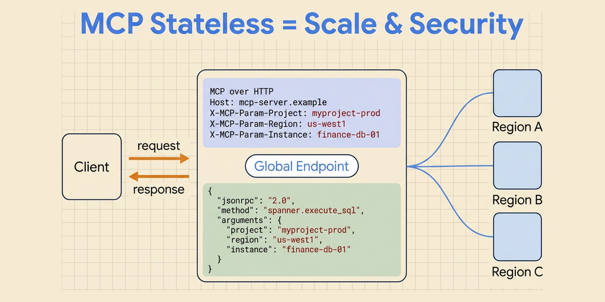
Google 8 月 5 日解释 MCP stateless updates：早期 MCP 适合本地单客户端与单 server 的会话式工具调用，但持久状态、握手和 session pinning 会卡住云原生扩展。Google 称其参与 MCP Transports Working Group，推动协议从 stateful transport 约束中解耦，以支持大规模并发 Agent 查询。
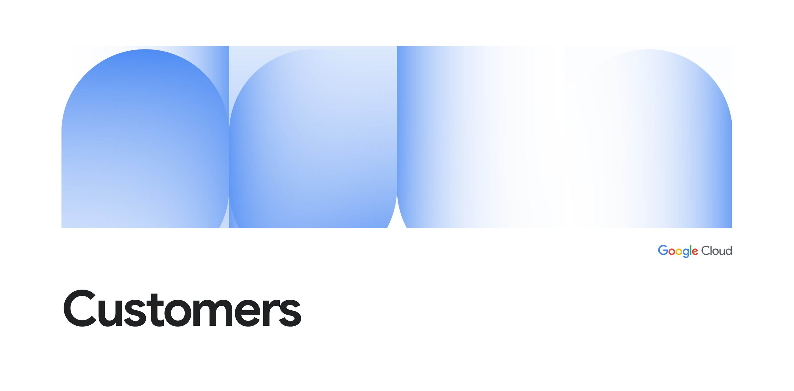
Google Cloud 发布 UiPath 案例，称这家企业自动化公司正在用 Google Cloud AI Hypercomputer 构建高性能 GPU 平台，支撑从任务自动化转向可推理、决策并执行复杂业务流程的 agentic AI。Google 文章强调，大企业级 autonomous agents 需要可靠且可扩展的基础设施。
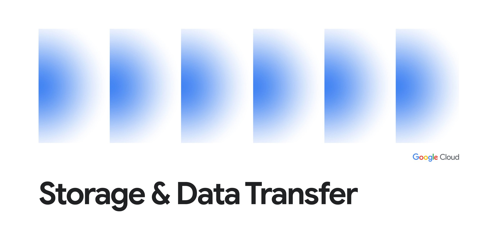
Google Cloud 宣布 Filestore 采用 Colossus 作为云原生后端存储层。Google 称，Filestore 是其第一方安全可扩展 NFS 文件服务，可服务企业用例以及前沿 AI 和 Agent 工作负载；接入 Colossus 后将获得更好的弹性、可扩展性和运营效率。
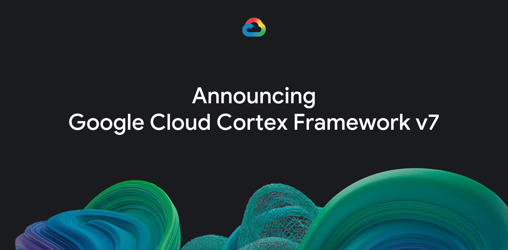
Google Cloud 宣布 Cortex Framework v7 GA，重点是为 SAP 数据提供 agent-ready data products。新版本将数据产品部署在 BigQuery 和 Knowledge Catalog 中，向 Gemini Enterprise Agent Platform 提供业务上下文，并用 Dataform 简化编排、版本控制和工作流管理。
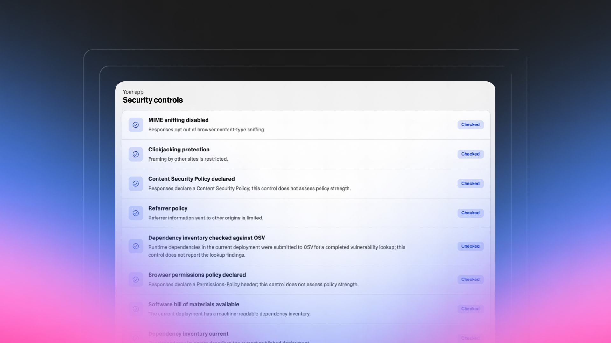
Lovable 8 月 5 日宣布，为每个发布在 Lovable 上的商业应用提供 trust center：一个位于应用地址下的安全页面，显示哪些安全控制已启用。Lovable 称这些信息直接从应用读取，不需要开发者手工填写，并强调这类页面不是认证，只是向客户、投资人和 IT 团队展示可检查状态。
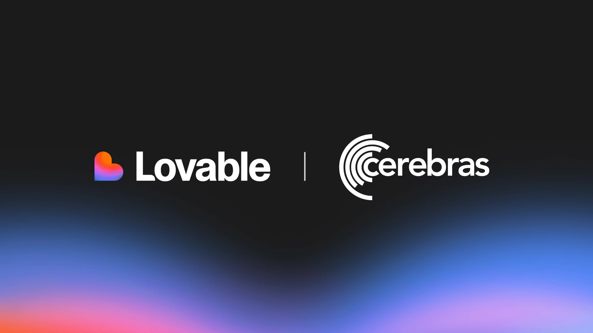
Lovable 宣布与 Cerebras 合作，目标是在 2027 年显著降低响应时间。Lovable 称，自 2024 年 11 月以来用户已创建超过 5000 万个项目；Cerebras 的 Wafer-Scale Engine 可把模型记忆放在单片晶圆上，减少多芯片通信成本，适合软件创建中的高频来回迭代。
SUNY 新闻稿称，Empire AI Beta 已 fully online，部署在纽约州立大学布法罗分校。这套 4000 万美元、NVIDIA 驱动的学术超算相较 2024 年 Alpha 系统，AI 训练容量提升 11 倍，推理提升 40 倍，存储提升 8 倍；Empire AI 总体由超过 5 亿美元公私资金支持。
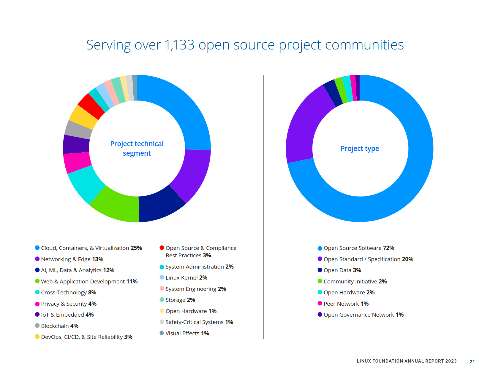
AIwire 8 月 5 日的 Off the Wire 列表显示，Linux Foundation 宣布成立 Tokenomics Foundation，聚焦 AI 成本与价值标准。同日 AIwire 还列出 O'Reilly 开源 AI 会议、Cerebras 与 Lovable 合作、Texas A&M 2490 万美元自驱动金属实验室等基础设施和开源相关事件。
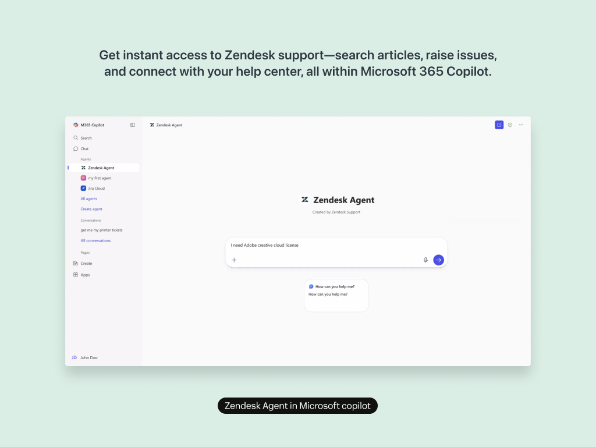
Zendesk 宣布 AI-powered custom object builder 在 Admin Copilot 中 GA，8 月 5 日当天发布并完成 rollout。管理员可以用自然语言描述需求，系统根据账户已有对象和字段生成 custom objects、fields 和 relationships；管理员可在 object builder 中编辑后一次性部署完整模型。功能面向 Zendesk Suite Professional 及以上计划。